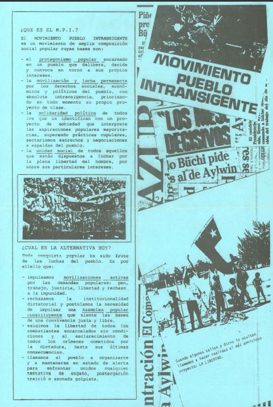
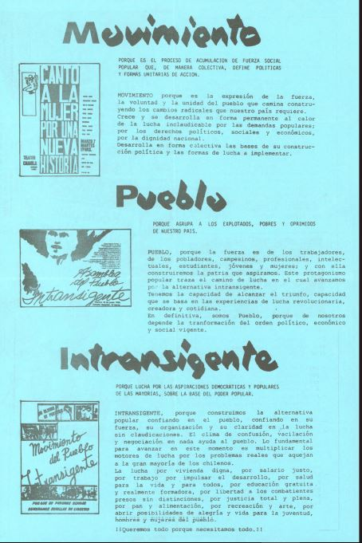

Camilo Escalona y el allendismo sepultado: la guerra interna que definió la deflexión del socialismo chileno
La muerte de Camilo Escalona ha sido recibida con una transversalidad que dice más del Chile de la transición que de la figura que se despide. Una crónica sobre la guerra interna que sepultó el allendismo revolucionario.

La muerte de Camilo Escalona ha sido recibida con una transversalidad que dice más del Chile de la transición que de la figura que se despide. Ministros de la dictadura, el presidente de derecha José Antonio Kast y el ex presidente Gabriel Boric confluyeron en el elogio. Esa unanimidad no es casual: Escalona fue uno de los artífices de un socialismo que aprendió a administrar el poder sin osar transformarlo, una lección que lo hizo útil para todos los que compartían el interés en la estabilidad del orden negociado heredado. Pero esa historia, la que hoy se conmemora y celebra, es también la historia de una derrota interna: la del allendismo revolucionario que, durante los años más duros de la dictadura, mantuvo viva la perspectiva de una transformación radical y fue sepultado no por Pinochet, sino por sus propios compañeros de partido.
Del almeydismo a la concertación
Escalona fue, en sus orígenes, hombre de Clodomiro Almeyda. Por instrucciones de esa dirección ingresó clandestinamente a Chile a principios de 1982 y operó como jefe del "frente interno" del PS-Almeyda, la fracción mayoritaria que entonces abrazaba la tesis de la "lucha de masas rupturista con perspectiva insurreccional". No se trataba de una postura retórica: desde mediados de los setenta, militantes socialistas eran entrenados militarmente en el extranjero. El discípulo del Cloro, sin embargo, educado en el Eurocomunismo, supo leer el momento en que la insurrección dejaba de ser útil y la negociación se volvía aparentemente la única salida.
Esa lectura de los militantes del PS, no solo la fracción de Almeyda, sino también el PS Núñez, no fue producto de una conversión súbita, sino de una operación política de largo aliento, ejecutada con paciencia y recursos, cuyo resultado fue la transformación del socialismo chileno: de una fuerza con vocación revolucionaria a un socio subalterno del orden neoliberal. La Fundación Friedrich Ebert (FES), vinculada al SPD alemán, fue el vehículo de esa operación. No se trató de una conspiración, sino de una pedagogía política que se presentó como cooperación técnica. En los años ochenta, la FES que había llegado a Chile el año 67, se convirtió en el lugar donde la izquierda chilena en Europa, aprendió a hablar en un nuevo idioma: el de la "concertación", un concepto que, en manos de los operadores de la transición, se transformó en sinónimo de renuncia a la transformación. Creó el espacio físico y simbólico para que la izquierda aprendiera a pensar su derrota no como un revés temporal, sino como una oportunidad para negociar su inserción en el nuevo orden.
Escalona fue el producto más acabado de esta operación. Su trayectoria, de la clandestinidad almeydista a la presidencia del Senado, es inseparable de la influencia de la FES. Fue un discípulo ejemplar porque internalizó la lección fundamental: la política es el arte de las mayorías, y las mayorías se construyen dentro de los marcos existentes. La FES le proporcionó las herramientas para hacerlo: el lenguaje, los contactos, el marco conceptual. Él las aplicó con disciplina.
La destrucción de la unidad de la izquierda revolucionaria y la alternativa insurreccional
Esa disciplina tuvo consecuencias concretas. El Movimiento Democrático Popular (MDP), coalición de izquierda creada en 1983 que agrupaba al Partido Comunista, al PS-Almeyda, al MIR y otras fuerzas rupturistas, fue disuelto en 1987. Fue una disolución forzada desde fuera, que reflejaba las maniobras del Departamento de Estado norteamericano y de la FES, para el ascenso de la salida pactada a la dictadura a través de una estrategia electoral-institucional. Escalona no fue su único protagonista, pero sí uno de sus operadores más eficaces. Consiguió bajar al PS Almeyda del MDP en uno de los momentos más álgidos de la lucha popular, cuando las posibilidades de una salida revolucionaria tomaba fuerza. Su papel consistió en hacer compatible la herencia almeydista con la nueva orientación: mantener el discurso de la ruptura mientras se construían los puentes hacia la Concertación.
Pero la operación había comenzado antes y era más amplia. Incluía la participación de la fracción de Núñez en la fundación de la Alianza Democrática en 1983, junto a la DC, excluyendo al MIR y el PC, y la exclusión y posterior borramiento histórico de las corrientes insurreccionalistas del PS, que se negaban a aceptar la orientación de una salida pactada. Posteriormente a ello la unificación de los sectores reformistas que sí la aceptaban. Mientras Escalona y otros dirigentes socialistas negociaban en Washington, bajo la tutela del Departamento de Estado norteamericano y la FES, esa salida pactada con la dictadura y la derecha, el grupo de militantes socialistas que se negaba a aceptar la derrota, los que no creían que la lucha armada hubiera sido un error, ni que la vía institucional fuera la única posible, mantenían viva la tradición de combate del Partido Socialista.
Esa corriente, ya expulsada del PS en 1984 por sus posturas radicales, dio origen a varias fracciones menores del "Allendismo Revolucionario durante la dictadura". El PS "Comandantes" o Dirección Colectiva: de los compañeros Eduardo Gutiérrez, Lautaro Labbé y Nicolás García, Rolando Calderón y Fidelma Allende. Y el "PS Salvador Allende", entre otros pequeños grupos. Representaban la continuidad de una tradición de lucha que se negaba a claudicar. Jaime Durán Oportus, uno de los articuladores del PS Salvador Allende, fue un dirigente clave en la coordinación de las fuerzas revolucionarias de la época junto a ex GAP y militantes retornados de las experiencias de lucha centroamericanas.
La coordinación revolucionaria y el MPI
En los años finales de la dictadura, cuando la Concertación ya estaba fraguando sus acuerdos con la derecha y los militares, y el PS había dado su paso hacia la derecha, saliendo del MDP conformando la Izquierda Unida, Jaime Durán junto a otros compañeros como Robinson Pérez y Renato Moreau del PS Salvador Allende, actuaron como los articuladores de la primera coordinación política de las organizaciones revolucionarias opuestas a la salida negociada de la dictadura. Antecedente de lo que más tarde sería la Coordinadora Subversiva por una Patria Popular (CSPP) que se formó en Chile a finales de diciembre de 1992. El MPI Movimiento Pueblo Intransigente, constituido el año 1988, donde confluyeron el Partido Socialista Salvador Allende, el Partido Socialista (Comandante), el MIR, el FPMR y el Movimiento Juvenil Lautaro. Esa coordinación dio origen a un manifiesto llamado "Un Pueblo que Lucha Triunfa", que posteriormente daría forma al Movimiento Pueblo Intransigente (MPI).

El MPI fue convocado por 200 dirigentes sociales en el histórico Estadio Nataniel. No fue un partido más, sino una expresión de la voluntad de un sector del pueblo que no se resignaba a la transición pactada. Sus bases eran el protagonismo popular, la movilización permanente por los derechos del pueblo y la intransigencia frente a cualquier engaño o negociación a espaldas del pueblo. El MPI representaba la alternativa que la Concertación se encargó de destruir: la de un pueblo que delibera, decide y convoca en torno a sus propios intereses.
El rol de Escalona: el sepulturero de la alternativa revolucionaria
Camilo Escalona no fue un simple observador de estos procesos. Fue uno de los principales operadores de la desactivación de la alternativa insurreccional y la construcción de la transición pactada. Su papel junto a Solari, Núñez, Briones y Correa en la disolución del MDP y en la exclusión del Partido Comunista de los acuerdos de Washington es bien conocido. Pero su labor interna fue la de borrar de la memoria del partido la existencia del socialismo revolucionario.
Esa operación de borramiento no fue casual. Escalona sabía que la existencia de un allendismo revolucionario era un obstáculo para la construcción de la Concertación. Mientras él negociaba con la derecha y los militares, el PS-SA y la fracción Comandantes, seguían sosteniendo que la lucha por la libertad de los combatientes presos, el esclarecimiento de los crímenes de la dictadura y la construcción de una Asamblea Popular Constituyente eran exigencias irrenunciables. Esas posiciones eran incompatibles con la política de acuerdos que Escalona impulsaba. La eliminación de archivos del Partido Socialista no fue un olvido, sino un acto político. Escalona y su facción triunfante necesitaban construir una narrativa de "unidad" que excluyera a aquellos que no aceptaban las reglas del juego de la transición. Esa "unidad" no era más que una política de exclusión de las fuerzas que mantenían viva la perspectiva de una transformación radical.
La guerra sucia en democracia
El episodio más revelador de esa lógica fue su vínculo con el Consejo Coordinador de Seguridad Pública, conocido como "La Oficina". Este organismo de inteligencia civil, creado durante el gobierno de Patricio Aylwin, operó con métodos cuestionados: infiltraciones, delaciones, montajes y abusos de poder. Escalona fue un nexo fundamental y un articulador político clave de dicha entidad. Cuando en 1996 defendió públicamente su labor, asegurando que había actuado "eficazmente y sin violar los derechos humanos", Escalona no estaba haciendo una declaración menor. Estaba validando una práctica de guerra sucia en democracia, que tuvo como objetivo desarticular al Frente Patriótico Manuel Rodríguez y al Movimiento Juvenil Lautaro. Que esa validación viniera de un dirigente que había sido perseguido por la dictadura, que había conocido el exilio y la clandestinidad, es lo que hace de este episodio una elocuente ilustración de los límites de la transición: la democracia pactada incorporó, en su propio seno, métodos represivos que no se distinguían sustancialmente de los utilizados por el régimen anterior.
La hegemonía de los vencedores y la memoria sepultada
La historia que se ha impuesto es la de los vencedores de esa guerra interna. La que sostiene que la transición fue una conquista de la democracia, y no una derrota de la izquierda revolucionaria. La que presenta a Escalona como un estadista y a los militantes revolucionarios Allendistas como "radicales" o "dogmáticos". La que celebra la "reunificación" socialista de 1989 como un triunfo de la unidad, sin mencionar que esa reunificación se hizo sobre los escombros del allendismo revolucionario.
El afiche del Movimiento Pueblo Intransigente que reproducimos es un testimonio de esa historia sepultada. Habla de un pueblo que delibera, decide y convoca en torno a sus propios intereses. De una lucha revolucionaria por los derechos sociales, económicos y políticos. De una Asamblea Popular Constituyente que sienta las bases de una convivencia justa y libre. Esa es la alternativa que la Concertación, con Camilo Escalona y el PS a la cabeza, se encargó de destruir.
El legado: una izquierda administradora
Escalona fue el segundo militante del PS en presidir el Senado, después de Salvador Allende. Ese hito sintetiza una paradoja histórica: la vuelta de la izquierda al corazón del Estado, investida de solemnidad institucional. Pero esa vuelta se produjo a costa de una renuncia: la izquierda no volvió para transformar el Estado, sino para administrarlo dentro de los límites que la transición le imponía, atrapada desde entonces en el cretinismo parlamentario.
La transversalidad de su despedida, tan elocuente como indicamos más arriba, no es más que el reconocimiento de que su figura nunca fue una amenaza para el orden que ayudó a construir. El socialismo que él encarnó no fue derrotado por sus adversarios; fue domesticado por los instrumentos del poder. Y la historia de Los Elenos, del PS Salvador Allende y los "comandantes" del Movimiento Pueblo Intransigente no es una curiosidad histórica. Es la historia de una alternativa derrotada, de un proyecto de transformación radical que fue sepultado por la lógica de la transición.
Esa derrota no fue obra de Pinochet, sino de los dirigentes socialistas que, como Escalona, prefirieron los acuerdos con la derecha antes que la coherencia revolucionaria. Hoy, cuando la Concertación es historia y la izquierda institucional busca desesperadamente un nuevo relato, la memoria de aquellos que no se rindieron adquiere una vigencia incómoda. Robinson Pérez (aun cuando finalmente termina integrado) o Jaime Durán y los militantes del PS Comandantes y PS Salvador Allende no son figuras del pasado; son un recordatorio de que la política de los acuerdos no fue el único camino posible. Y de que la derrota de esa alternativa no es un destino inevitable, sino el resultado de una decisión política que la izquierda institucional aún no ha tenido el valor de revisar. Pero que nosotros rescatamos para el futuro de Chile.
"¡Solo la lucha nos hará libres!"